REC · CINTA 03 · SANATORIO
Un juego de terror en Roblox de Héctor (Jiuda) y Diego (Reika), hecho junto a Claude. Elige una criatura, gírala con el dedo y prueba sus animaciones.
Arrastra para girar · pellizca para acercar
Animaciones
Así se ve en el juego
Los 5 roles PROTOTIPO
Esta parte todavía es un prototipo: está en diseño y aún no está armada en el juego. Lo que sí está armado son las criaturas de arriba.
Se juega en cooperativo, de 1 a 6 jugadores. Cada quien tiene un lugar y una tarea, y nadie puede sobrevivir solo. Cada rol lleva su herramienta en el brazo de la mochila, así se ve bien con cualquier skin.
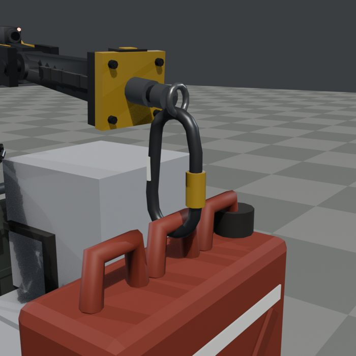
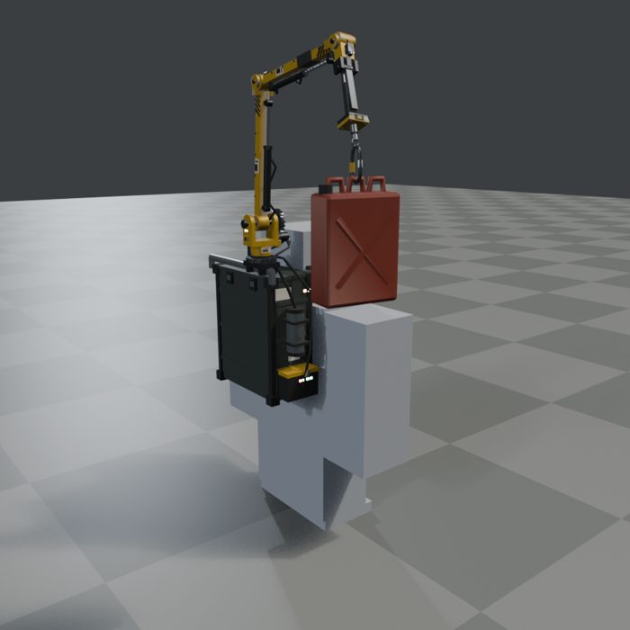
Gancho y mosquetón. Cuelga bidones, cajas o el maletín del brazo de la mochila. (prototipo)
Los que salen a explorar.
Recorren el sanatorio con una cámara de mano con visión nocturna, cumplen los objetivos de la noche y se esconden en casilleros, armarios y bajo las camas cuando la criatura se acerca. Pueden contener la respiración para que no los oiga.
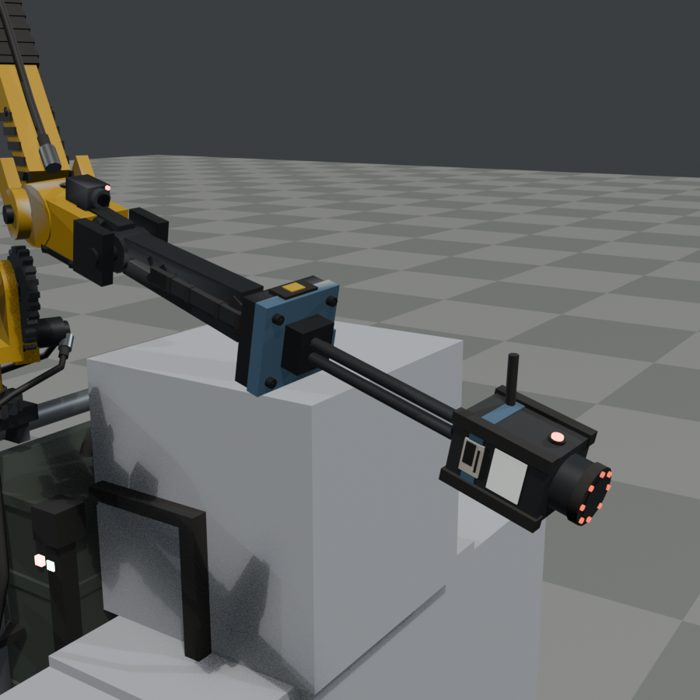
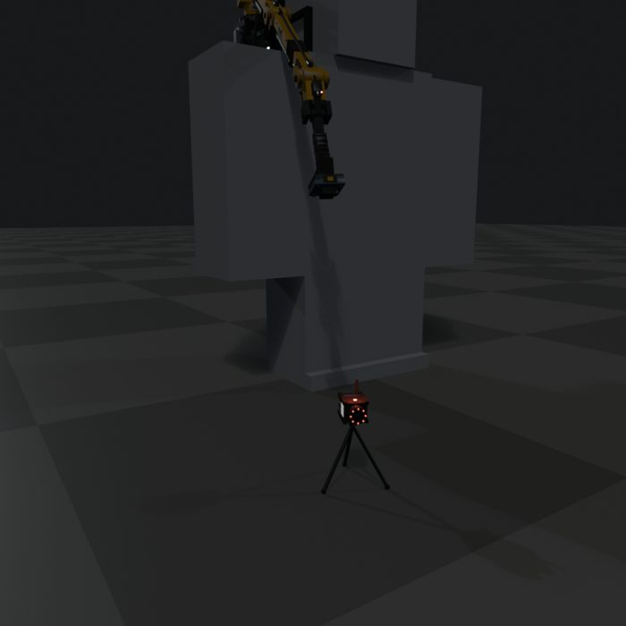
Cámara en trípode. Una cámara chica que se deja en el piso y graba sola (con su luz de REC). (prototipo)
Encerrado en la Sala de Control.
Ve 4 cámaras a la vez, abre y cierra puertas a distancia y guía al equipo por radio. Todo gasta energía: si se pasa, hay apagón y todas las puertas se abren. Si mira mucho a la criatura por cámara, ella va hacia su cuarto.
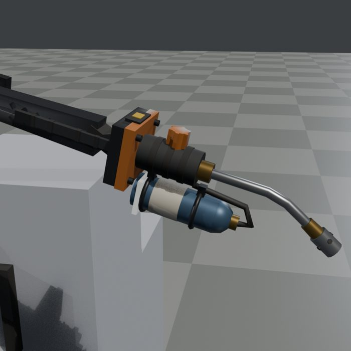
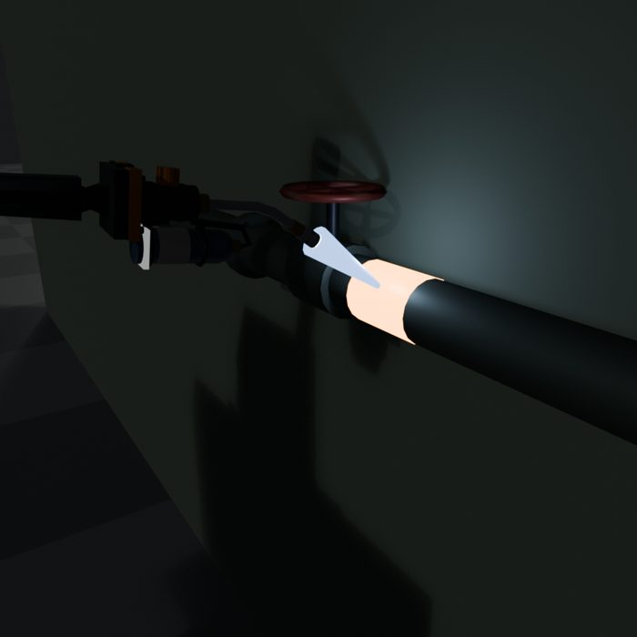
Soplete. Calienta válvulas y fusibles. (prototipo)
Vive en el sótano, junto al generador.
Mantiene la luz: pone combustible y evita que el generador se sobrecaliente con un minijuego de válvulas. Es el único que se mueve por las ventilas, y desde ahí lleva comida y cosas al Vigía.
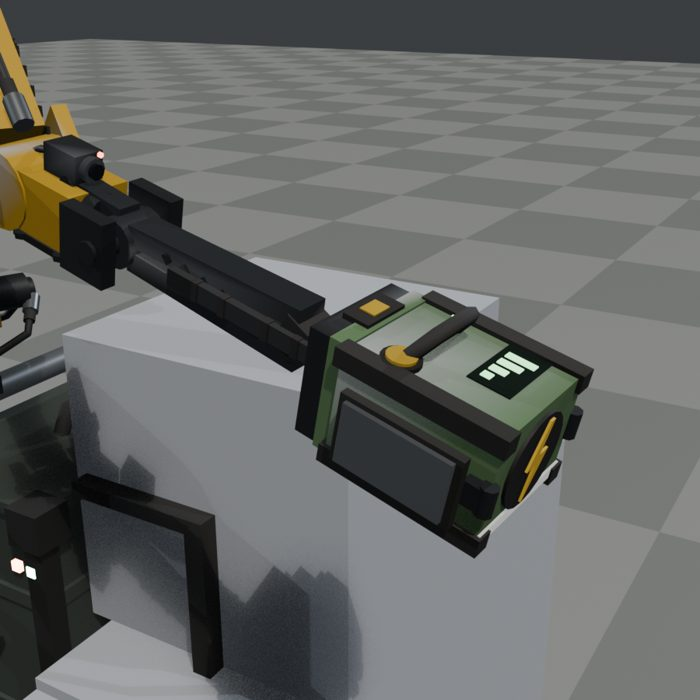
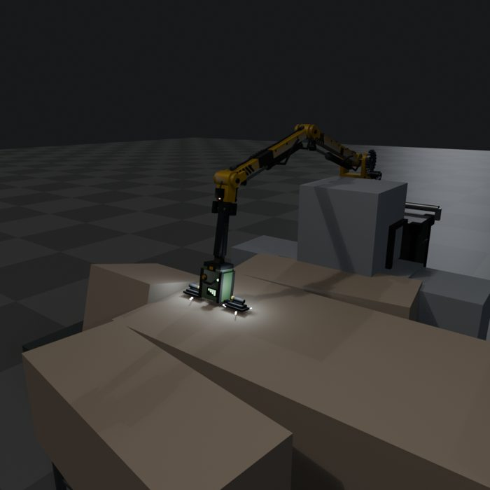
Desfibrilador portátil. Caja verde con paletas que se abren al frente. (prototipo)
En la enfermería, junto al invernadero.
Cultiva plantas, cocina raciones y prepara medicinas. Su tableta es la única que muestra los signos vitales exactos de todos, y eso ayuda a descubrir a los imitadores. También puede salir a revivir a alguien.
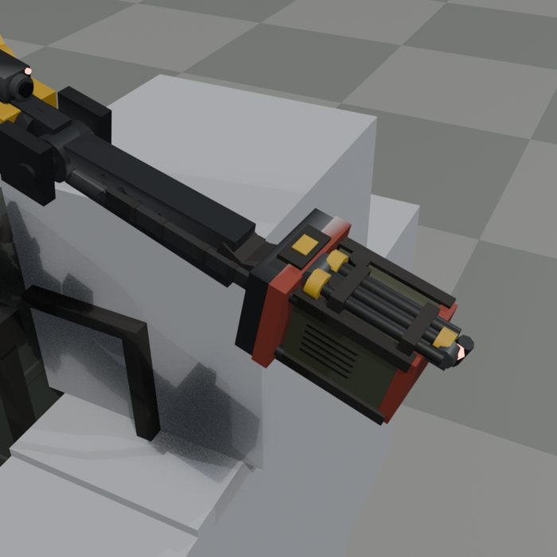
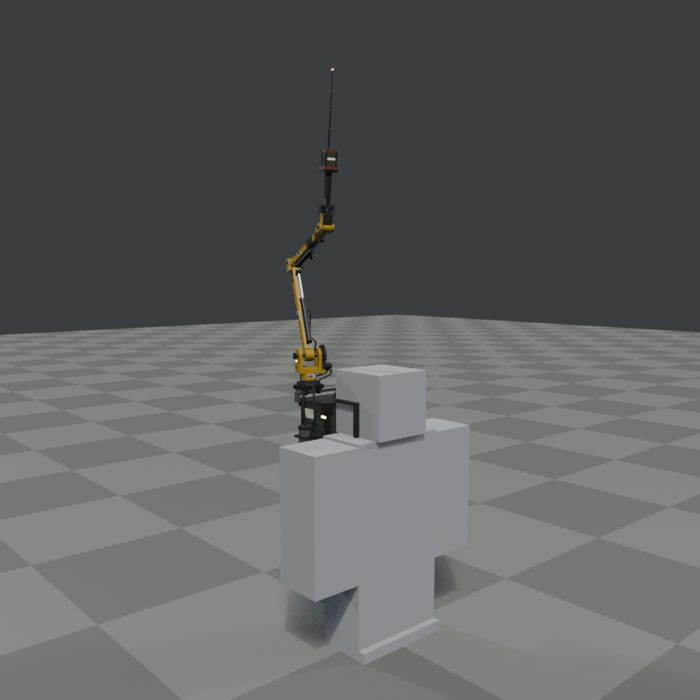
Antena plegable. La antena de su radio se abre en acordeón y lleva un foco en la punta. (prototipo)
En la caseta de la reja, afuera.
De día recibe el camión con suministros y los manda por la esclusa. De noche revisa a los visitantes y decide a quién deja pasar: algunos son humanos de verdad y otros son imitadores.
Cada uno depende de otro: el Vigía necesita la energía del Técnico, el Técnico necesita materiales del Portero, el Doctor necesita ingredientes del Portero y muestras de los Rastreadores.
La mochila PROTOTIPO
Es verde con detalles amarillos y la lleva cualquier jugador al empezar, sin importar su skin. Lo importante es el brazo mecánico: sostiene la linterna, detiene puertas y carga a un compañero caído.
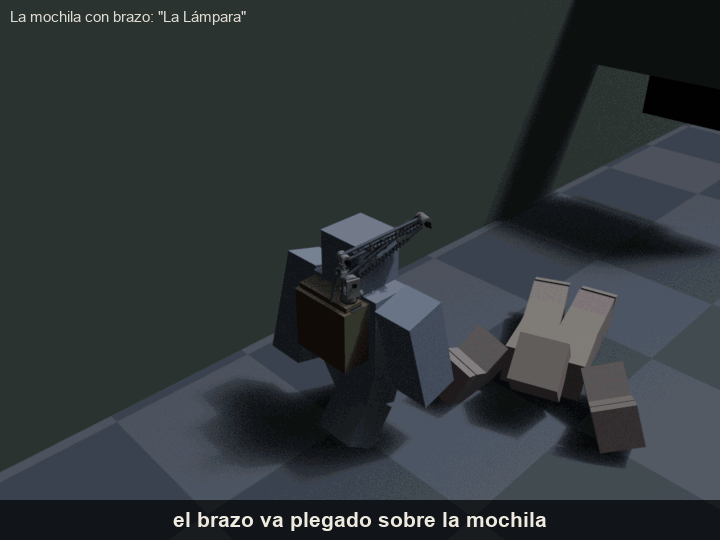
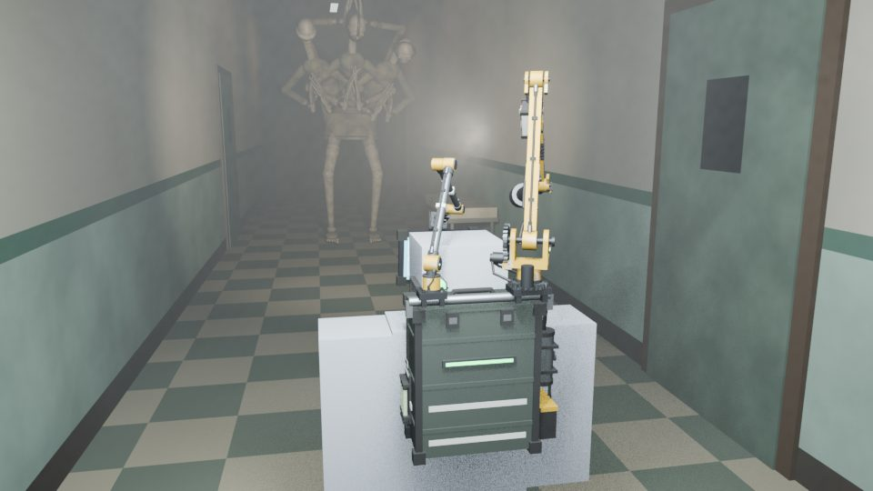
Lo que trae para todos
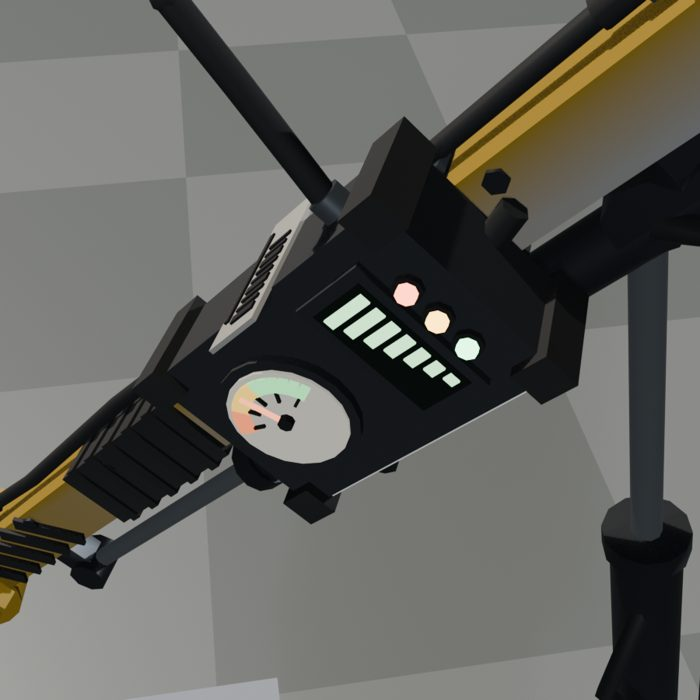
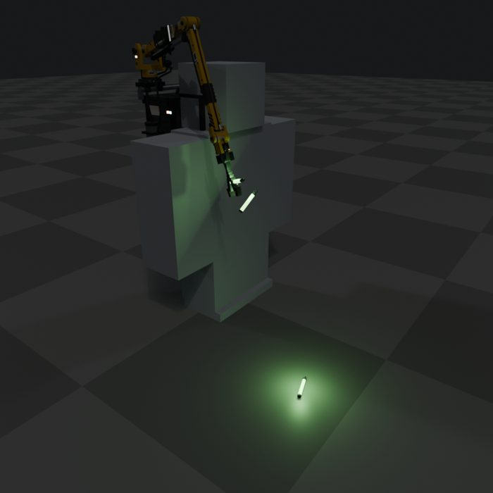
Luz de estado
La luz de la tapa le dice a tus compañeros cómo estás.
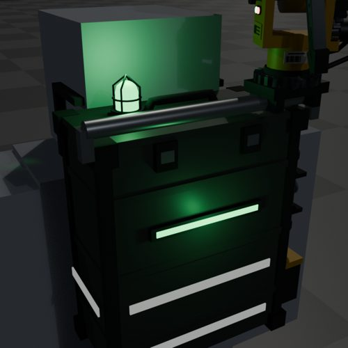
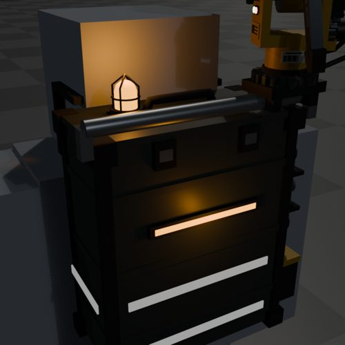
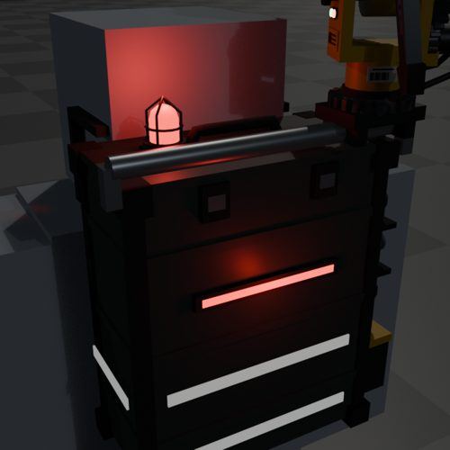
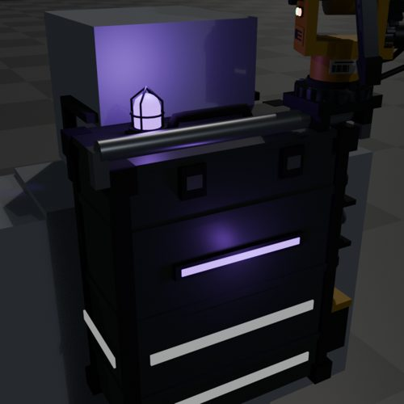
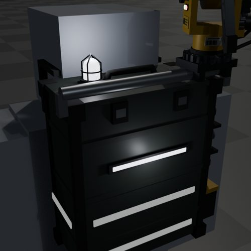